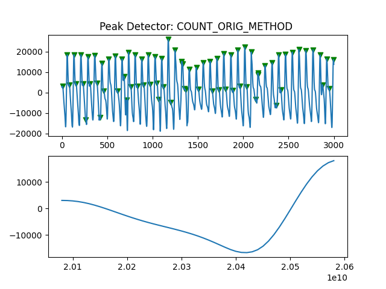
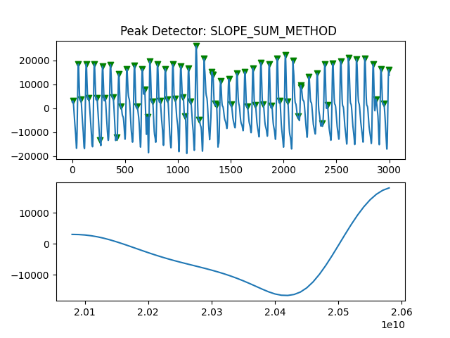

Note
Click here to download the full example code
PPG Peak Detector Comparisons¶
Comparing Different Peak Detectors
9 10 11 12 | # Code Adapted from:
# https://github.com/meta00/vital_sqi/blob/main/examples/SQI_pipeline_PPG.ipynb
# AND
# https://meta00.github.io/vital_sqi/_examples/others/plot_read_signal.html#sphx-glr-examples-others-plot-read-signal-py
|
Libraries
17 18 19 20 21 22 23 24 25 26 27 28 29 30 31 32 33 | # Generic
import os
import numpy as np
import pandas as pd
import matplotlib.pyplot as plt
# Scipy
from scipy.stats import skew
from scipy.stats import kurtosis
# vitalSQI
from vital_sqi.data.signal_io import PPG_reader
import vital_sqi.highlevel_functions.highlevel as sqi_hl
import vital_sqi.data.segment_split as sqi_sg
from vital_sqi.common.rpeak_detection import PeakDetector
from vital_sqi.preprocess.band_filter import BandpassFilter
import vital_sqi.sqi as sq
|
Out:
Importing the dtw module. When using in academic works please cite:
T. Giorgino. Computing and Visualizing Dynamic Time Warping Alignments in R: The dtw Package.
J. Stat. Soft., doi:10.18637/jss.v031.i07.
Loading data
39 40 41 42 43 44 45 46 47 48 49 50 51 52 53 54 55 56 57 58 59 60 61 62 63 64 65 | # Filepath
filepath = r'..\..\..\..\OUCRU\01NVa_Dengue\Adults\01NVa-003-2001\PPG'
filename = r'01NVa-003-2001 Smartcare.csv'
#defining constants
trim_amount = 300
hp_filt_params = (1, 1) #(Hz, order)
lp_filt_params = (20, 4) #(Hz, order)
filter_type = 'butter'
segment_length = 30
sampling_rate = 100
#readind PPG data
data = PPG_reader(os.path.join(filepath, filename),
signal_idx=["PLETH", "IR_ADC"],
timestamp_idx=["TIMESTAMP_MS"],
info_idx=["SPO2_PCT","PULSE_BPM","PERFUSION_INDEX"], sampling_rate=sampling_rate)
PeakDetectorNames = ["ADAPTIVE_THRESHOLD",
"COUNT_ORIG_METHOD",
"CLUSTERER_METHOD",
"SLOPE_SUM_METHOD",
"MOVING_AVERAGE_METHOD",
"DEFAULT_SCIPY",
"BILLAUER_METHOD"]
|
68 69 70 71 72 73 74 75 76 77 78 79 80 81 82 83 84 85 86 87 88 89 90 91 92 93 94 95 96 97 98 99 100 101 102 103 104 105 106 107 | pd.Timedelta.__str__ = lambda x: x._repr_base('all')
signals = pd.DataFrame(data.signals.T)
# Include column with index
signals = signals.reset_index()
signals['timedelta'] = \
pd.to_timedelta(signals.index / sampling_rate, unit='s')
signals = signals.set_index('timedelta')
# Show
print("Raw Signals: ")
print(signals)
# Plot
fig, axes = plt.subplots(nrows=2, ncols=1)
axes = axes.flatten()
signals[0].plot(ax=axes[0])
signals[1].plot(ax=axes[1])
#==================
#Bandpass Filtering
#==================
def bpf(signal):
hp_filt_params = (1, 1) #(Hz, order)
lp_filt_params = (20, 4) #(Hz, order)
sampling_rate = 100
filter = BandpassFilter(band_type='butter', fs=sampling_rate)
filtered_signal = filter.signal_highpass_filter(signal, cutoff=hp_filt_params[0], order=hp_filt_params[1])
filtered_signal = filter.signal_lowpass_filter(filtered_signal, cutoff=lp_filt_params[0], order=lp_filt_params[1])
return filtered_signal
signals['Filtered_Pleth'] = bpf(signals[0])
signals['Filtered_IR_ADC'] = bpf(signals[1])
|

Out:
Raw Signals:
index 0 1
timedelta
0 days 00:00:00 0 36033 216524
0 days 00:00:00.010000 1 40919 216470
0 days 00:00:00.020000 2 45715 216415
0 days 00:00:00.030000 3 50227 216364
0 days 00:00:00.040000 4 54362 216379
... ... ... ...
0 days 15:37:43.720000 5626372 31408 183755
0 days 15:37:43.730000 5626373 31318 184002
0 days 15:37:43.740000 5626374 31117 184296
0 days 15:37:43.750000 5626375 30761 184554
0 days 15:37:43.760000 5626376 30261 184828
[5626377 rows x 3 columns]
Peak Detector Comparison on PLETH
112 113 114 115 116 117 118 119 120 121 122 123 124 125 126 127 128 129 | print('Peak Detector Comparison on Pleth')
pleth_segment= signals['Filtered_Pleth'][2000:5000]
for i in range(1,8,1):
peaks, troughs = PeakDetector().ppg_detector(pleth_segment, i)
sample_range = np.arange(0,3000,1)
fig, axes = plt.subplots(nrows=2, ncols=1)
axes = axes.flatten()
ax = axes[0]
ax.plot(sample_range, pleth_segment)
ax.scatter(peaks,pleth_segment[peaks], color="g", marker="v")
ax.scatter(troughs,pleth_segment[troughs], color="r", marker="v")
ax.title.set_text("Peak Detector: %s " %PeakDetectorNames[i-1])
ax = axes[1]
ax.plot(pleth_segment[peaks[0]:peaks[1]]) #plotting only one period
plt.show
|
- 
- 
Out:
Peak Detector Comparison on Pleth
the 'mode' parameter is not supported in the pandas implementation of take()
the 'mode' parameter is not supported in the pandas implementation of take()
search_for_onset() takes 3 positional arguments but 4 were given
<function show at 0x000001772AE04CA0>
Peak Detector Comparison on IR_ADC
134 135 136 137 138 139 140 141 142 143 144 145 146 147 148 149 150 151 152 | print("Peak Detector Comparison on IR_ADC")
IRADC_segment= signals['Filtered_IR_ADC'][2000:5000]
for i in range(1,8,1):
peaks, troughs = PeakDetector().ppg_detector(IRADC_segment, i)
sample_range = np.arange(0,3000,1)
fig, axes = plt.subplots(nrows=2, ncols=1)
axes = axes.flatten()
ax = axes[0]
ax.plot(sample_range, IRADC_segment)
ax.scatter(peaks,IRADC_segment[peaks], color="g", marker="v")
ax.scatter(troughs,IRADC_segment[troughs], color="r", marker="v")
ax.title.set_text("Peak Detector: %s " %PeakDetectorNames[i-1])
ax = axes[1]
ax.plot(IRADC_segment[peaks[0]:peaks[1]]) #plotting only one period
plt.show
|
Out:
Peak Detector Comparison on IR_ADC
the 'mode' parameter is not supported in the pandas implementation of take()
the 'mode' parameter is not supported in the pandas implementation of take()
search_for_onset() takes 3 positional arguments but 4 were given
<function show at 0x000001772AE04CA0>
Total running time of the script: ( 0 minutes 34.782 seconds)